183 fam — de novo candidates
612
One entry per AnalysisNode subclass. For each: the current icon, a verdict, and candidate
replacements as emoji, Font Awesome 6.4 (already shipped via the fontawesomefree
package — zero new assets) and hand-rolled inline SVG where nothing off-the-shelf says it better.
The recommended pick has an amber outline.
Hover any candidate for its name. The last section riffs on whole-node layouts
(corner type-badge, short class label, short/long text, count strip).
Open this file directly in a browser from the repo — the Font Awesome CSS and current
icon images are referenced relative to claude/. Emoji render with your OS emoji font, which is
exactly the point of the emoji caveat below.
| Pros | Cons | |
|---|---|---|
| Font Awesome | Already shipped (6.4.0); one visual style across all nodes; colourable via CSS (so category colour-coding is free); crisp at any size; trivially used in the jQuery-UI select menu too. | Monochrome by default; a few concepts (Punnett square, intervals, pedigree) have no good glyph. |
| Emoji | Zero assets, colourful, instantly recognisable. | Renders differently on every OS (Noto vs Apple vs Segoe) — clinical users on Windows/Linux see different art than screenshots/docs; no CSS colour control; some suggestions below are multi-person ZWJ sequences that fall apart on older fonts. Fine for docs/menus, risky as the primary node identity. |
| Inline SVG | Full control, can be two-tone, themable with currentColor, matches the FA style if drawn
on the same grid. Best for domain glyphs FA lacks. |
Hand-drawn assets to maintain — worth it only for the handful of genetics-specific concepts. |
Recommendation: Font Awesome as the base system + ~6 custom SVGs drawn on the same 512-grid (Punnett square, intervals, trio/quad pedigree, splice, Venn). Emoji kept as a fun option for docs.
fa-database is a pixel-perfect conceptual swap.fa-vial, and fa-vial works as the corner type-badge in the redesigns below.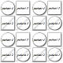
fa-users says "group of samples" instantly and pairs naturally with
fa-user/fa-vial for Sample.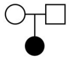
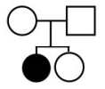
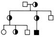
fa-clipboard-check matches how classifications are
shown elsewhere in VariantGrid's UI and reads as "expert-reviewed records".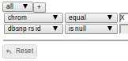
fa-list-check (or fa-dna if you'd rather lead with
"gene") is cleaner; the funnel half is redundant once every filter node carries the filter category colour.fa-bolt preserves that. The splicing variant currently swaps in a whole different picture;
an exon-skipping SVG (above) or fa-scissors as a small secondary badge is clearer.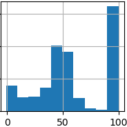
fa-chart-column is the flat equivalent, or
fa-percent if you want to say "frequency" rather than "distribution".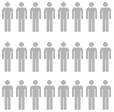
fa-earth-oceania) separates "world populations / gnomAD" from "my samples",
which is the actual semantic difference.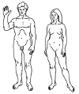
fa-stethoscope (or fa-notes-medical) says "clinical
phenotype / HPO" much faster.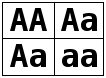
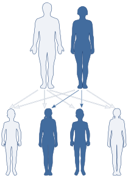
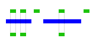
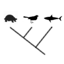
fa-code-branch is the lazy-but-fine fallback.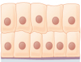
fa-lungs, fa-brain) says
"tissue-specific expression" clearly.fa-sliders.
The swatch icon is actually meaningful — it mirrors the count-legend colours the node filters by.
If it stays, redraw as SVG rectangles using the real BuiltInFilters.COLORS values so it
stays in sync.fa-tags is the identical concept, flat
and scalable. Also fixes the toolbar button at the same time since the asset is shared.fa-code-merge is the natural "many inputs → one output" glyph.disabled = True.
If it ever comes back: fa-square-check.
Today a node is its icon: a PNG background with the user's name overlaid wherever it fits, counts floating
bottom-right. The mockups below explore the layout you described — type badge in a corner, a short class
label, real space for text, counts in their own section. All are plain CSS + FA and hover to show the
long name (title attribute — try it). Category colour:
green = source, blue = filter, matching
the existing source/filter split in get_node_classification().
Round type-badge overhangs the top-left corner (reads even when nodes overlap); a thin coloured strip carries the short class name; the body is all text; counts get a dedicated bottom strip. Short text on the node, long text on hover.
Same information, but badge and class name share one solid header; feels like a small window/card. The footer uses count "pills" in the legend colours (black = total, red = ClinVar LP/P, amber = high/mod impact).
Closest to today: the icon is still the hero, but flat/colour-coded in a rounded tile, with the type badge implied by colour, name underneath, count as a corner pill. Smallest footprint — good if canvases get crowded.
Type icon + rotated class name in a coloured rail; widest text area of the four. Reads well left-to-right but the vertical text is small — better for wide/short nodes.
All mockups above assume the split you described:
get_node_class_label_short(), shown on the badge strip/rail. Frees the name field from having
to identify the node type at all.name already exists). A short_name (user-editable, else auto-truncated) fits the card.title/tooltip: the complete gene list name,
HPO terms, filter expression. Already available server-side; just needs plumbing into the overlay's
title.| Node | Verdict | Pick |
|---|---|---|
| AllVariantsNode | Swap like-for-like | fa-database |
| SampleNode | Keep canvas SVG (sex shapes) | menu/badge: fa-vial |
| CohortNode | Replace | fa-users |
| TrioNode / QuadNode / PedigreeNode | Keep concept | redraw pedigree glyphs as inline SVG |
| ClassificationsNode | Replace | fa-clipboard-check |
| FilterNode | Swap like-for-like | fa-filter |
| GeneListNode | Replace | fa-list-check (or fa-dna) |
| DamageNode (Effect) | Keep bolt identity | fa-bolt; splice = custom SVG / fa-scissors |
| AlleleFrequencyNode | Keep concept | fa-chart-column |
| PopulationNode | Replace (clashes with Cohort) | fa-earth-oceania |
| PhenotypeNode | Replace | fa-stethoscope |
| ZygosityNode | Keep concept | Punnett square inline SVG |
| MOINode | Keep concept | re-export SVG on tight viewBox |
| IntersectionNode | Replace | interval-overlap inline SVG |
| ConservationNode | Keep concept, simplify | cladogram inline SVG |
| TissueNode | Replace (it's a photo!) | fa-lungs |
| BuiltInFilterNode | Keep swatch idea | SVG from BuiltInFilters.COLORS, or fa-sliders |
| TagNode | Swap like-for-like | fa-tags |
| MergeNode | Replace | fa-code-merge |
| VennNode | Keep live venn widget | menu icon = inline SVG venn |
| SelectedInParentNode | Disabled — skip | (fa-square-check if revived) |
Implementation note: because updateNodeFromData() already swaps
overlay_css_classes per node, the badge/strip designs drop in by extending
createDefaultNode()'s overlay markup + a per-class FA icon map — no per-node factories needed
except the ones that already exist (Sample/Trio/Quad/Venn keep their bespoke renderers).